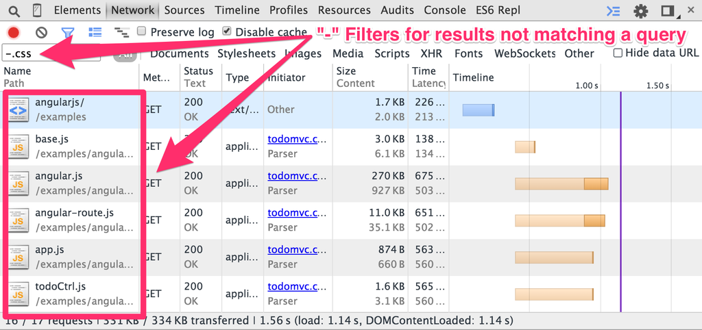

Want to work with Bleeding Edge Web tech?
- Same format.
- Meet quarterly?
- Different locations around Austin (sponsored).
- Discussions around tech jobs and career development in Austin.
Sponsored by employers.
News from the Bleeding Edge
What Is Bleeding Edge Web?
A monthly-ish update of the latest and greatest in:
- Browser news
- W3C standards updates
- Interesting language & framework releases
- Emphasis on JavaScript and Node
Anything else that might be interesting to web app devs!
Browser Pop Quiz
Last version check — October 23, 2014 (3 months ago):
Browser Pop Quiz
As of January 28, 2015:
Chrome Highlights
Version 39
- 64-bit support for Mac.
- Stability & performance updates. $16.5k bounties issued.
- ES6 Generators!
- Initial support for Beacons.

More Chrome Highlights
Version 40
- 62 Security Updates, $35K in bounties paid.
- New ServiceWorkers (formerly Navigation Controllers).
- Negative Text Filters:

Firefox Highlights

Firefox Highlights
Firefox Newsmakers
Firefox will not support HTML Imports.
... and (drumroll)...
Firefox Developer Edition
The first browser built for developers.
- Debug any browser: Inspect and debug your app across any browser or device with Valence — a powerful, pre-installed extension that you’ll only find in Firefox Developer Edition.
- Pixel-perfect coding: Target screen sizes with the Responsive Design View and tweak your CSS on the fly with the built-in Style Editor for pixel-perfect coding.
- Global File constructor

Opera Highlights
Version 26 (based on Chromium 39)
- Beacon API
- ES6 Generators
- 64-bit OSX Support

Opera Highlights
Version 27 (based on Chromium 40)
Safari Highlights

Indexed Database API - Recommendation
http://www.w3.org/TR/IndexedDB/
Defines APIs for a database of records holding simple values and hierarchical objects (key/value).The database maintains indexes over records it stores. An application developer directly uses an API to locate records either by their key or by using an index. A query language can be layered on this API. An indexed database can be implemented using a persistent B-tree data structure.
Server-Sent Events - Proposed Recommendation
http://www.w3.org/TR/eventsource/
This specification defines an API for opening an HTTP connection for receiving push notifications from a server in the form of DOM events. The API is designed such that it can be extended to work with other push notification schemes such as Push SMS.
A possible alternative to websockets in some scenarios.
Languages, Frameworks & Tools
Node.js
http://nodejs.org/
v0.10.36 (stable) & v0.11.15 (unstable) released.
Updated OpenSSL to 1.0.1l
V8 Upgrades (Unstable: 3.28.73)
npm Upgrades (Unstable: 2.1.6)
libuv updates

Node.js: 2014 In Review
Red Hat bought FeedHenry (node-based platform)
Apigee endorsed Node via support in their platform.
Oracle announced the Oracle Node Cloud Service
F5 used node in their BIG-IP series.
Mulesoft released Osprey, the first Node RAML implementation.
Amazon Lambda shipped with Node as it's first platform.
Node core had 17 maintenance releases and 595 commits
NPM doubled from around 50K modules to over 110K modules
Major server frameworks express, Connect, Hapi, LoopBack, and Sails each doubled downloads.
Node.js: 2014 In Review (cont)
Used by Apple, MetLife, & Zappos.
GE started using Node.js in their appliances.
More io.js
There have been 4 patch releases downloaded over 400K times.
In the lifetime of node.js™ there have never been more than 8 active committers. Last week Chris Dickinson onboarded 8 new committers to io.js with plans to bring on another round this week.
... you can expect io.js to be marked stable in March.
Some tasks outside of core development have already grown to the point that they necessitate their own project teams and committers.
Now io.js’ biggest problem is keeping up with the flood of contributors coming in, participating in every facet of the project. io.js isn’t just healthier than node.js™ today, it’s healthier than node.js™ ever was and this is only the beginning.

And now for something completely different...
Start Thinking About...
SpaceCityJS - March 28, 2015 in Houston
Bleeding Edge Web Work - Maybe? :-)
More?
←
→
/
#